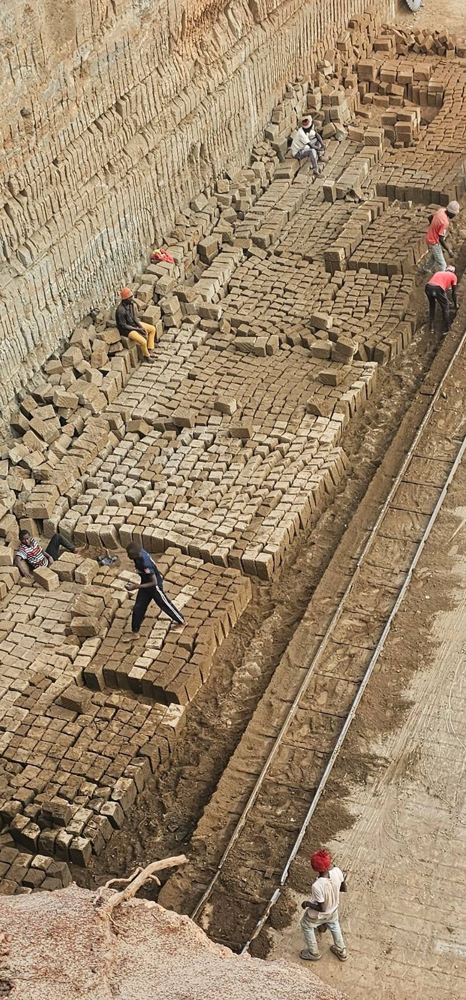
KOMO · KIAMBU COUNTY · KENYA
We quarry, cut and supply Ndarugo building stone, and run the machinery and construction services that keep the site moving.
ABOUT US
Quarry Machinery & Construction is a quarry and construction business in Komo, Kiambu County, producing quality machine-cut building stone known locally as Ndarugo.
We operate our own rail-mounted stone-cutting saws, wheel loaders and excavators on site — from cutting stone out of the quarry face to loading it for delivery. That means fewer delays between quarrying, cutting and getting material to your site.
Beyond stone production, we service and maintain quarry machinery, and support construction projects that need reliable stone and equipment.
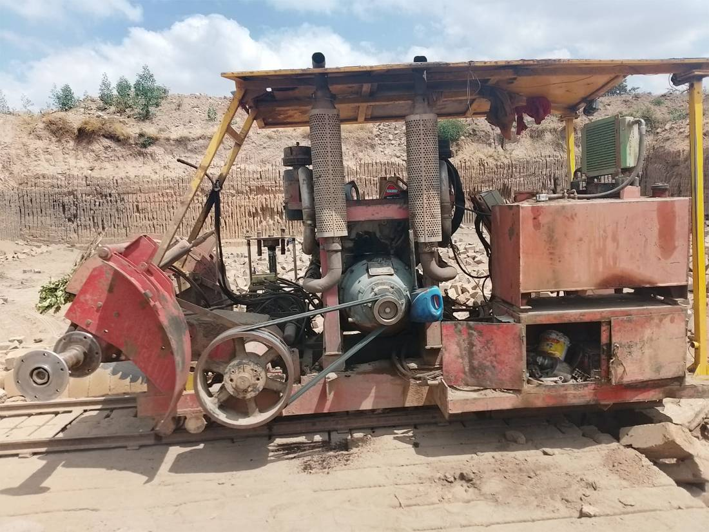
WHAT WE DO
Four ways we work with builders, developers and other quarry operators.
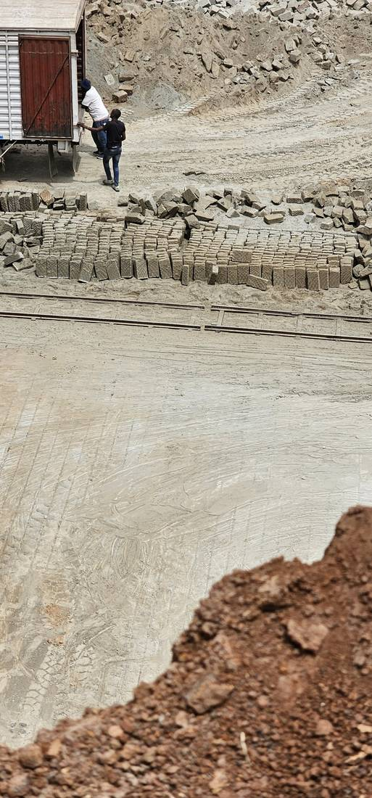
Quality machine-cut building stone, popularly known as Ndarugo, cut to size and ready for delivery.
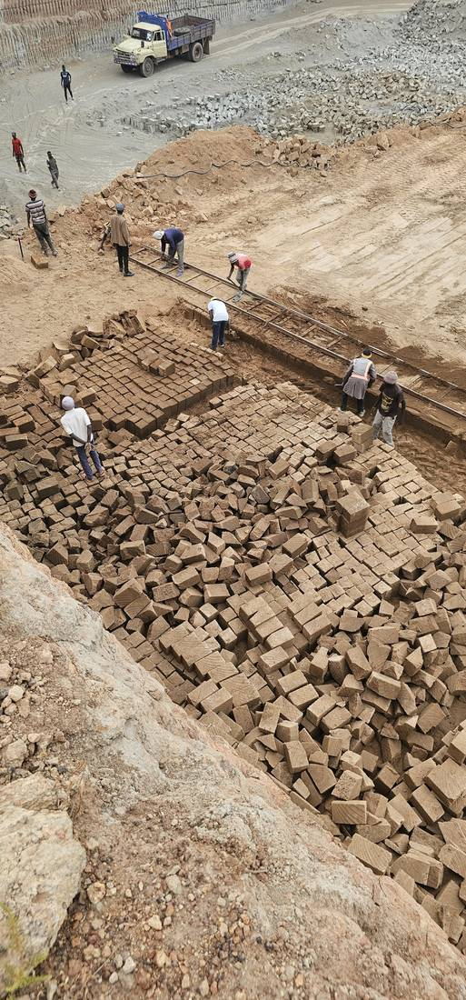
Quarry excavation, stone production and material preparation across the site.
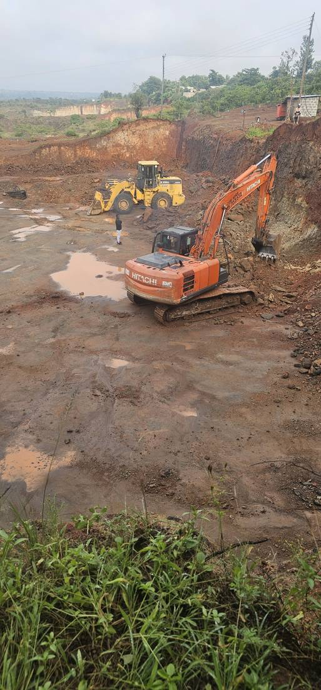
Quarry machinery and equipment — excavators, loaders and rail saws — run and maintained for construction operations.
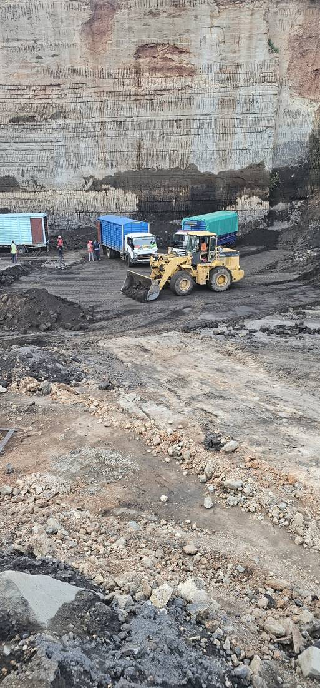
Supporting construction projects with quality quarry materials, loading and haulage.
ON SITE
A look at the equipment and the work, day to day.
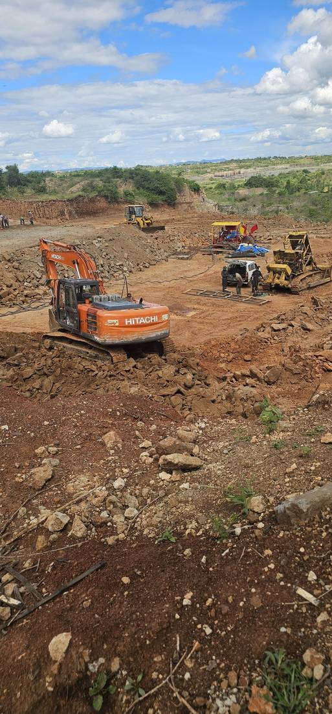
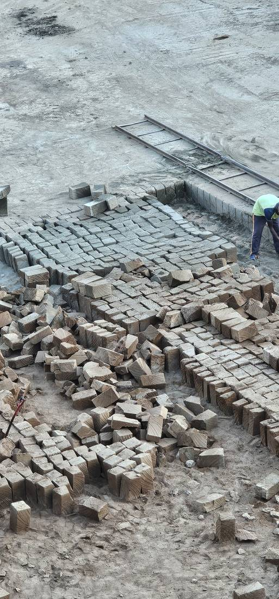
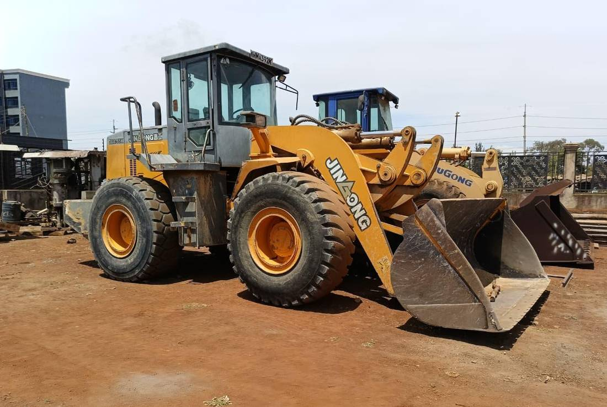
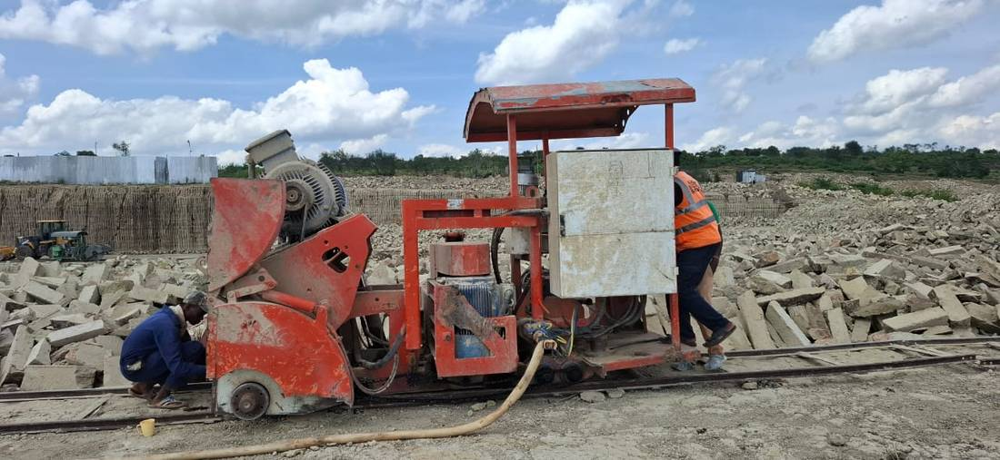
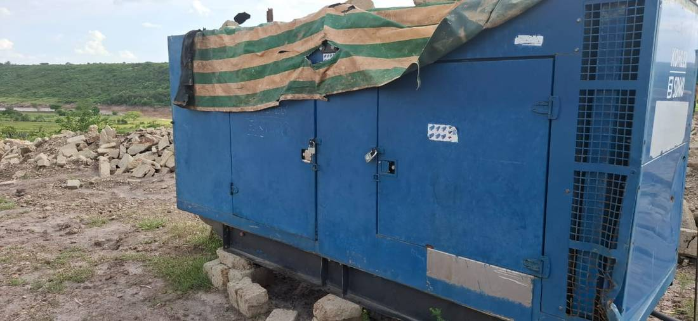
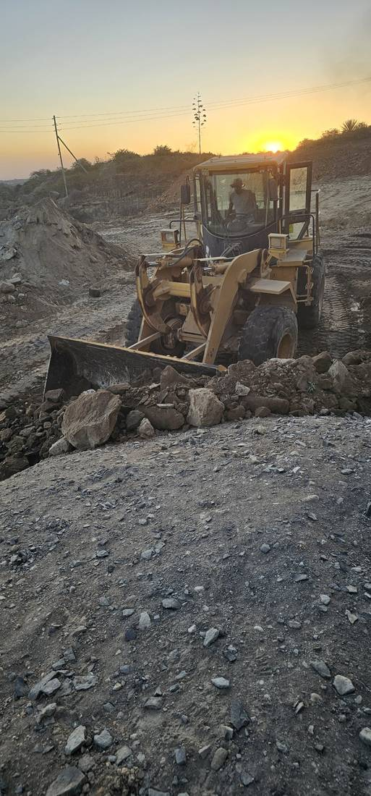
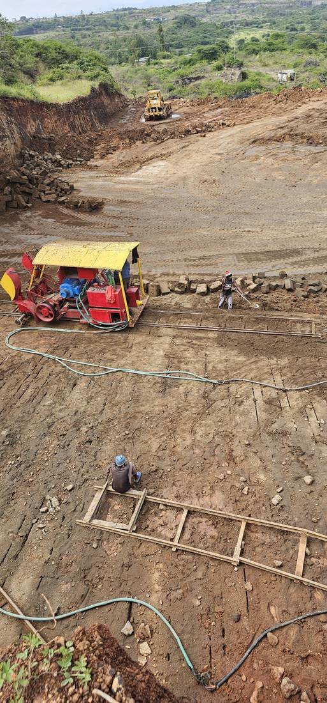
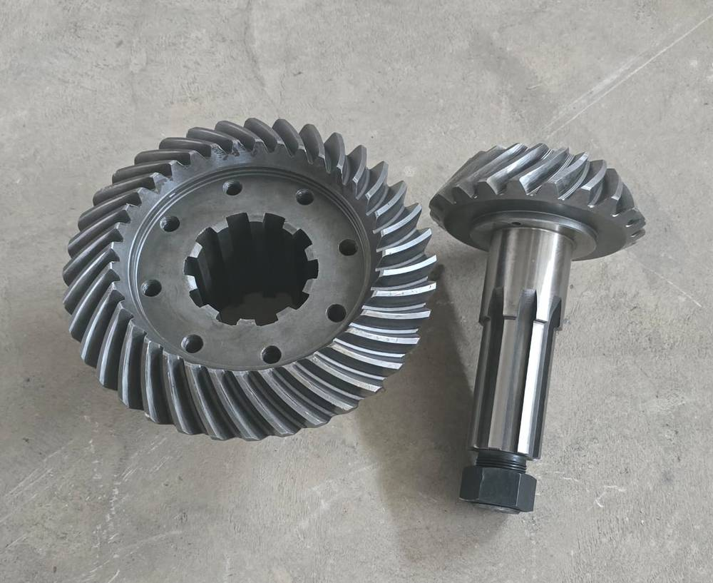
LOOKING AHEAD
We're planning our next cut into the quarry, working from the shallower side first to reach good-quality grey stone faster.
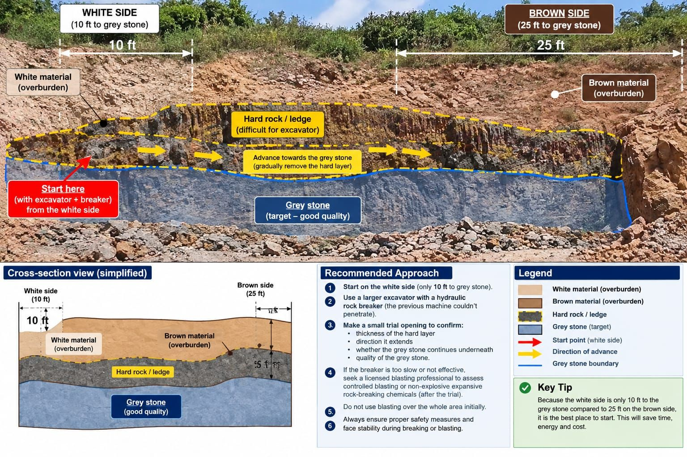
Only about 10 ft of overburden separates the white side from the grey stone, against 25 ft on the brown side — so we start there to save time and cost.
A hard rock ledge sits above the grey stone. We're bringing in a larger excavator with a hydraulic breaker to open a trial section and confirm its thickness and direction.
Once the trial confirms good-quality stone underneath, we advance gradually across the face rather than opening the whole area at once, keeping the working face stable and safe.
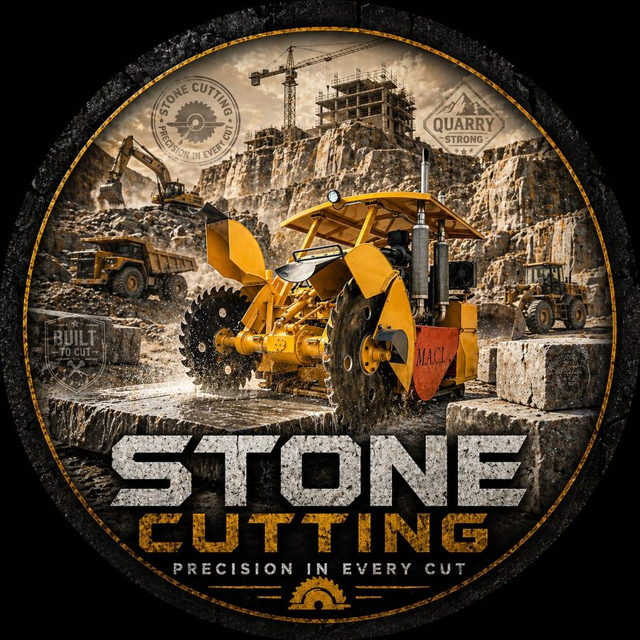
OUR CRAFT
From the quarry face to the finished block, every stage of our stone-cutting is built around accuracy, consistency and getting quality Ndarugo to site on time.
GET IN TOUCH
Phone
0712 272 180Location
Komo, Kiambu County, KenyaMessage us on WhatsApp with your location and quantity, and we'll get back to you with pricing and availability.
WhatsApp Us